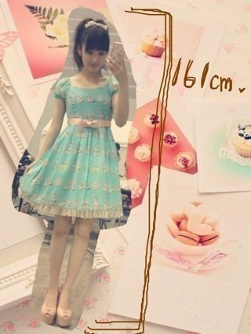
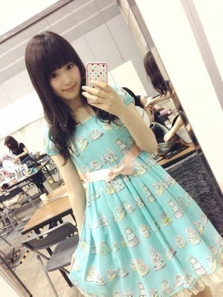
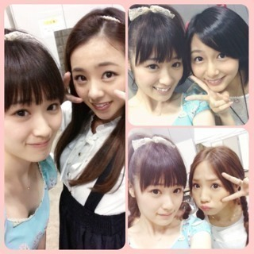

2013/0729Mon（´-`）.｡oO(か ずみん×199
バケラッタヽ(´>∀<`*)ﾉ
昨日握手会来てくれたみなさん、
ありがとうございました！
途中腰痛で座ったりしてしまって
すみませんでした(´;ω;`)
背筋つけなきゃな(´・ω・｀)
お洋服はこれ♡

THE ラブリー(*´ｰ`*人)
エミキュのワンピです♪
水色×ピンクが大好きなの！

1.2部は髪をおろしてました♪
どっちが好きですか(*´ω`*)？？

ろん、じょん、
市來先生と(σ´∀｀)σ
じょーさんブログにね、
嬉しいこと書いてあったから
スクーリーンショット
したんだよ( *´艸｀)
じょーさんじょーさんじょーさん♪
なついちゃってしょうがない(`∀´*)♡
ここではあえて書かないけど(笑
じょーさんとのエピソード
またこれからもまたいっぱい
書いていくね(⌒▽⌒)
あと、この前言ってた後輩の
剣道女子が総体、、、、
なんと、、、、
優勝しました(T_T)♡♡
次は全中出場です！！！
嬉しい(T_T)(T_T)
素晴らしい後輩をもって
私は本当に幸せ。
顧問の先生もうちらの時と
同じなんだけど、
うちらの時は喜ばせて
あげられなかったからさ...
ありがとう。
みんな、本当におめでとう(っ*´x`)っ
全国も頑張って！！！
あぁ、剣道やりたくなってきた(*ﾟﾛﾟ)!!
筋トレ始めます(￣▽￣)
それでは、明日も頑張るぞ♪
あ、今乃木どこやってる！
おやすみなさい(*´ｰ`*人)
2013/07/29 00:24
コメント(707)
次回握手会に行くね。
バケラッタ(＾ω＾)
一番かわいい
めざましライブ＆横浜個別
お疲れ様です☆(o･ω･o)ゝ
2日とも京都から
遠征できて幸せです笑
今さっき
無事京都に帰ってきました
次はzeppで会いましょう(^^)
佑キングでした＼(^o^)／
バケラッターーーー!!!(๑´ڡ`๑)
お疲れ様！
かずみんと一回ゆっくり話したいっす！
かずみんと一回ゆっくり話したいっす！
かずみんやっぱり可愛い！
握手会おつかれさま！
やっぱりおろしてる髪の毛もかわいい！
のぎー(・ω・)ノ
かずみん大好きだー！えへ
かずみん大好きだー！えへ
かずみん！
乃木どこみました！アメイジング！
リュックは母からのプレゼントやったんですねー☆
リュックは母からのプレゼントやったんですねー☆
後輩の頑張りは励みになるよねー！
俺もこないだ母校の部活いって俺も頑張ろーってなった♪
明日も熱いだろうけど体調壊さないように頑張って(*^^*)ね
おやすみヽ(^｡^)丿ダン
昨日はお疲れ様でした！
腰大丈夫ですか？
かずみんとお話しできてすごいうれしかったです！
自分のこと覚えといてくださいね？
腰大丈夫ですか？
かずみんとお話しできてすごいうれしかったです！
自分のこと覚えといてくださいね？
ちわ！たくとんです(^^)
握手会お疲れさま！
服かわいいなぁー！髪下ろしてる方が好きかなぁ♪
それじゃあ、まぁたぁな！
握手会お疲れさま！
服かわいいなぁー！髪下ろしてる方が好きかなぁ♪
それじゃあ、まぁたぁな！
かずみんワンピめっちゃかわいーっす
今日も乃木どこおもしろかったよー
今日も乃木どこおもしろかったよー
わーい初コメです。最近ファンになった者です！
先日のめざましライブ行ってすっかり楽しんでしまいました！これからどんどんイベントに参加したいと思います。
後輩が勝つのはうれしいですよね！今はちょうど甲子園予選の時期ですが、僕の母校は一回戦で負けてしまいました。(´・ω・｀)
先日のめざましライブ行ってすっかり楽しんでしまいました！これからどんどんイベントに参加したいと思います。
後輩が勝つのはうれしいですよね！今はちょうど甲子園予選の時期ですが、僕の母校は一回戦で負けてしまいました。(´・ω・｀)
かずみん＼(^o^)／
めっちゃ面白かったよ♪
LIVEお疲れ様でした♪
早く握手会行きたい(*^^*)
自分は幕張の全握に行くね(^-^)/
NOGIBINGO観たよ！
めっちゃ面白かったよ(^-^)/
あと乃木どこ楽しみだよ(((o(*ﾟ▽ﾟ*)o)))
あとめざまし観にいくね♪
質問です！
祭りにいったら必ず
なに食べますか？以上です。
じゃあまたねー☆
お仕事など頑張ってね！
ずーさん☆
バケラッタヽ(´ー｀)ノ
まりっか推しの人こと、あおっちです！
初の個別でしたね！
覚えててくれてありがとね☆
ポニーテールのが好きだから、4、5部に行って良かった！！
後輩さん達おめでとう！！
俺も筋トレ始めようかな(￣ー￣)ﾆﾔﾘ
バケラッタヽ(´ー｀)ノ
まりっか推しの人こと、あおっちです！
初の個別でしたね！
覚えててくれてありがとね☆
ポニーテールのが好きだから、4、5部に行って良かった！！
後輩さん達おめでとう！！
俺も筋トレ始めようかな(￣ー￣)ﾆﾔﾘ
かずみん
こんばんわ(^^)/
バケラッタ☆
昨日の握手会ではどうもありがとう
(*^^*)
前回の個別握手会から３ヶ月
禁断症状が出て病んでた心が癒されました♪
緊張して上手く話せなかったけど
沢山話しができたので幸せな１日となりました☆
そしてかずみんの笑顔でパワーをいただきました(☆o☆)
本当にどうもありがとう
m(__)m
腰早く良くなる事を祈っています☆
次回の横浜の個握でもまた沢山話しをしようね(^-^)/
宜しくですd(⌒ー⌒)!
こんばんわ(^^)/
バケラッタ☆
昨日の握手会ではどうもありがとう
(*^^*)
前回の個別握手会から３ヶ月
禁断症状が出て病んでた心が癒されました♪
緊張して上手く話せなかったけど
沢山話しができたので幸せな１日となりました☆
そしてかずみんの笑顔でパワーをいただきました(☆o☆)
本当にどうもありがとう
m(__)m
腰早く良くなる事を祈っています☆
次回の横浜の個握でもまた沢山話しをしようね(^-^)/
宜しくですd(⌒ー⌒)!
かずみん、今日も一日お疲れ様でした！！
乃木どこ見たよ♪
かずみん、可愛かったよ(*^^*)
明日もお仕事頑張ってくださいね＼(^o^)／
僕はかずみんをずっと応援しているからねo(^o^)o
おやすみなさい(^-^)/
乃木どこ見たよ♪
かずみん、可愛かったよ(*^^*)
明日もお仕事頑張ってくださいね＼(^o^)／
僕はかずみんをずっと応援しているからねo(^o^)o
おやすみなさい(^-^)/
こんばんわ
腰痛とか大丈夫？？？
あんま無理すんなー笑
さっき乃木どこ見てた！
あのリュック背負って今度握手会へｗ
腰痛とか大丈夫？？？
あんま無理すんなー笑
さっき乃木どこ見てた！
あのリュック背負って今度握手会へｗ
おやすみヽ(^｡^)丿ダン
バケラッターʕ•͡౪•ʔ
筋トレ頑張ってーʔ•̫͡•ཻʕ
おやすみー(つω-｀)
ヤッシーです(^-^)v
お疲れ様(o^_^o)
体には気をつけて。
へばっまずな(^-^)/~~
お疲れ様(o^_^o)
体には気をつけて。
へばっまずな(^-^)/~~
腰痛大丈夫？？？
お大事にね><
わたしは、かみおろしてるのが好きかなぁ〜♡♡
あ、乃木どこ？みたよ♡いっぱい写ってた〜♡笑
土曜日はありがとう！
ぐっさんです。
握手に行ってないメンバーにも
知られている理由は、僕にも
わからないです。
メンバーに聞いてみてよ。
真夏にも聞いてよね！(笑）
ほんと、心当たりないんだから、ほんとに。
でも、ありがたいよね、そう言うのは。
覚えてもらうのは大変なのにね。
だから、みんなに僕が喜んでるって
伝えておいてください。
あ、FNS歌の夏祭りは、水曜日だったよ。
観覧当たってるので、行きますね。
玲香には、「静かにしていろ」って
釘刺されたけど、まぁ、雰囲気見て、
行けそうだったら、盛大に
一実コールしますんで(笑）
例の件は、Nさんに話したので、
一実からもどうなってるか
聞いてみてください。
たぶん、言えば、届けてくれると思うんで。。
じゃ！！
PS やっぱ、俺はループが好きだわ
ぐっさんです。
握手に行ってないメンバーにも
知られている理由は、僕にも
わからないです。
メンバーに聞いてみてよ。
真夏にも聞いてよね！(笑）
ほんと、心当たりないんだから、ほんとに。
でも、ありがたいよね、そう言うのは。
覚えてもらうのは大変なのにね。
だから、みんなに僕が喜んでるって
伝えておいてください。
あ、FNS歌の夏祭りは、水曜日だったよ。
観覧当たってるので、行きますね。
玲香には、「静かにしていろ」って
釘刺されたけど、まぁ、雰囲気見て、
行けそうだったら、盛大に
一実コールしますんで(笑）
例の件は、Nさんに話したので、
一実からもどうなってるか
聞いてみてください。
たぶん、言えば、届けてくれると思うんで。。
じゃ！！
PS やっぱ、俺はループが好きだわ
長い方かな∩^ω^∩
乃木どこみたよー！
すごく面白くて、声出して笑っちゃった(*^^*)
かずみん可愛かった
握手会おつかれさま！
ワンピース可愛いぃぃぃ
水色にレースにリボンなんて…お姫様みたいで素敵
すごく面白くて、声出して笑っちゃった(*^^*)
かずみん可愛かった
握手会おつかれさま！
ワンピース可愛いぃぃぃ
水色にレースにリボンなんて…お姫様みたいで素敵
かずみん、こんばんわ、バケラッタ
 昨日は握手会お疲れ様でした。そして、有難う。昨日は３部から行ったので１部２部で髪を下してたのは知らなかったんだけど、いいね、可愛いよ。そして、昨日も言ったけど、服、可愛いねー。そういう色合いの服、ほんとに好きだよ。来週の全握は行けないんだけど、１１日の個別には行くからその時に会いましょう。あ、その後、腰大丈夫？気を付けてね。僕もよく腰を痛めるから、そのつらさとかよくわかるよ。じゃあ、また横浜で会いましょう。バケラッター。
昨日は握手会お疲れ様でした。そして、有難う。昨日は３部から行ったので１部２部で髪を下してたのは知らなかったんだけど、いいね、可愛いよ。そして、昨日も言ったけど、服、可愛いねー。そういう色合いの服、ほんとに好きだよ。来週の全握は行けないんだけど、１１日の個別には行くからその時に会いましょう。あ、その後、腰大丈夫？気を付けてね。僕もよく腰を痛めるから、そのつらさとかよくわかるよ。じゃあ、また横浜で会いましょう。バケラッター。


あーーーーー
握手会行きたかったぁぁぁぁぁあぁぁぁぁぁぁあ
私服かわいー
筋トレ頑張って！
握手会行きたかったぁぁぁぁぁあぁぁぁぁぁぁあ
私服かわいー
筋トレ頑張って！
髪おろしてたほうが良い。
理由はその方が可愛いからだよ。
理由はその方が可愛いからだよ。
かわいいやっちゃなー笑、
15のアメイジング＼(^o^)／
15のアメイジング＼(^o^)／
バケラッタ～～♪
かずみん～～～個別握手会楽しかったよ～～～♪
次は８月４日の全握だよ～～♪
次はかずみんが俺につけてくれたニックネーム「うーた君」で呼んでね♪
楽しみにしてるけん！
じゃあお休みm(_ _)m
アメイジング！
かずみんラブリーでかわいいね(｡･ω･｡)
かずみんの後輩優勝おめでとう！！
全中も優勝出来たら、良いね(*^_^*)
自分は髪下ろしてる方が好きです！^ ^
もちろん両方可愛いですよ(￣▽￣)（笑）
剣道優勝すごいですね‼
自分も剣道してたんで分かるんですけど、
そうとう辛い練習を乗り越えたからこその優勝ですよね！^ ^
おめでとうございます！*\(^o^)/*
剣道またやってみたいけど、かかり稽古はこりごりです(￣◇￣;)（笑）
もちろん両方可愛いですよ(￣▽￣)（笑）
剣道優勝すごいですね‼
自分も剣道してたんで分かるんですけど、
そうとう辛い練習を乗り越えたからこその優勝ですよね！^ ^
おめでとうございます！*\(^o^)/*
剣道またやってみたいけど、かかり稽古はこりごりです(￣◇￣;)（笑）
乃木どこ？のかずみん可愛かった
おろしてた方がいいかな
おろしてた方がいいかな
かわいい♪
バケラッタ(^^)b
バケラッタ(^^)b
一実ちゃん♡♡♡
こんなに可愛い可愛い一実ちゃん。
会いに行きたかった(´；ω；｀)
なぜ行けなかったのか(´；ω；｀)
行けない自分を責めちゃうよ(´；ω；｀)
会えなくてもずっと大好きだよ(´；ω；｀)♡
ってかてかスクーリーンショットじゃなくて
スクリーンショットじゃないのっ？www
後輩の皆が優勝できてよかったね(><)
よかったよぉ(><)♡
ってかかずみんってコメントとか
全部読んでたりする？？、
そぅだったら嬉しいなっ♡
書きたいことありすぎて
長文になっちゃった(><)w
そいじゃぁねぇ
こんなに可愛い可愛い一実ちゃん。
会いに行きたかった(´；ω；｀)
なぜ行けなかったのか(´；ω；｀)
行けない自分を責めちゃうよ(´；ω；｀)
会えなくてもずっと大好きだよ(´；ω；｀)♡
ってかてかスクーリーンショットじゃなくて
スクリーンショットじゃないのっ？www
後輩の皆が優勝できてよかったね(><)
よかったよぉ(><)♡
ってかかずみんってコメントとか
全部読んでたりする？？、
そぅだったら嬉しいなっ♡
書きたいことありすぎて
長文になっちゃった(><)w
そいじゃぁねぇ
かずみんお疲れ様〜(｡･ω･｡)ﾉ
おとといの個別では、三ヶ月にかずみんと握手できて、緊張したけど楽しかったよ〜( ´ ▽ ` )ﾉ
ゆうとさんに紹介してもらって、かずみんに名前呼んでもらって高まった〜ヽ(；▽；)ノ
ありがとうかずみん！♡
髪おろしてるのもポニーテールも可愛すぎる(｀･ω･´)！個人的にはポニーテールが好きかな〜( ´ ▽ ` )ﾉ
じょーさんとほんと仲良いね〜( ´ω` )2人のやりとり大好きだよ〜！
では明日からもお仕事がんばってね！おやすみなさい(´_ゝ｀)
おとといの個別では、三ヶ月にかずみんと握手できて、緊張したけど楽しかったよ〜( ´ ▽ ` )ﾉ
ゆうとさんに紹介してもらって、かずみんに名前呼んでもらって高まった〜ヽ(；▽；)ノ
ありがとうかずみん！♡
髪おろしてるのもポニーテールも可愛すぎる(｀･ω･´)！個人的にはポニーテールが好きかな〜( ´ ▽ ` )ﾉ
じょーさんとほんと仲良いね〜( ´ω` )2人のやりとり大好きだよ〜！
では明日からもお仕事がんばってね！おやすみなさい(´_ゝ｀)
一実ちゃん♡♡♡
こんなに可愛い可愛い一実ちゃん。
会いに行きたかった(´；ω；｀)
なぜ行けなかったのか(´；ω；｀)
行けない自分を責めちゃうよ(´；ω；｀)
会えなくてもずっと大好きだよ(´；ω；｀)♡
ってかてかスクーリーンショットじゃなくて
スクリーンショットじゃないのっ？www
後輩の皆が優勝できてよかったね(><)
よかったよぉ(><)♡
ってかかずみんってコメントとか
全部読んでたりする？？、
そぅだったら嬉しいなっ♡
書きたいことありすぎて
長文になっちゃった(><)w
そいじゃぁねぇ
こんなに可愛い可愛い一実ちゃん。
会いに行きたかった(´；ω；｀)
なぜ行けなかったのか(´；ω；｀)
行けない自分を責めちゃうよ(´；ω；｀)
会えなくてもずっと大好きだよ(´；ω；｀)♡
ってかてかスクーリーンショットじゃなくて
スクリーンショットじゃないのっ？www
後輩の皆が優勝できてよかったね(><)
よかったよぉ(><)♡
ってかかずみんってコメントとか
全部読んでたりする？？、
そぅだったら嬉しいなっ♡
書きたいことありすぎて
長文になっちゃった(><)w
そいじゃぁねぇ
更新ありがとう♪
かずみん
バケラッタ＼(^_^)／
ほー、それがとっておきのワンピースですな、なんと可愛らしい(*^▽^)/★*☆♪
かずみんはポニーテール似合いますよね☆
巻き髪も好きなんだけどねq(^-^q)
総体優勝って、スゴいね
相当努力したんだろうね（~▽~＠）♪♪♪
ほんと、おめでとう＼(^_^)／
でわでわ～
(^_^)/~~
バケラッタ＼(^_^)／
ほー、それがとっておきのワンピースですな、なんと可愛らしい(*^▽^)/★*☆♪
かずみんはポニーテール似合いますよね☆
巻き髪も好きなんだけどねq(^-^q)
総体優勝って、スゴいね
相当努力したんだろうね（~▽~＠）♪♪♪
ほんと、おめでとう＼(^_^)／
でわでわ～
(^_^)/~~
バケラッタ∩^ω^∩
今回の洋服かわいいね～♡
行けなかったのが残念(´・ω・｀)
私はポニーテールのかずみんの方が好きだな～♡
今回は市來ちゃんと能條との写メだ！
ありがとー♡
お母さんがめちゃくちゃ喜ぶと思います(笑)
今回の洋服かわいいね～♡
行けなかったのが残念(´・ω・｀)
私はポニーテールのかずみんの方が好きだな～♡
今回は市來ちゃんと能條との写メだ！
ありがとー♡
お母さんがめちゃくちゃ喜ぶと思います(笑)
バケラッタ！
髪おろすと、オバＱのＱ太郎みたいにみえるねｗ
今日の乃木どこは、ちょっとヒム兄がうらやましい。
たぶんほんとなんだろうなぁ。。
こんばんわ
個握お疲れ様でした
自分もパシフィコ行きましたよ
めっちゃ楽しかったです
自分は髪結んでる方が好きです
乃木どこ見ましたよ
では明日もがんばってください
ブログ199だね(^O^)
次で節目の200回目だねー(*^o^*)
腰は大丈夫ですか？？
今日の乃木どこ面白かったです(^O^)
明日も頑張ってください(^o^)/
アメイジング＼(^o^)／
次で節目の200回目だねー(*^o^*)
腰は大丈夫ですか？？
今日の乃木どこ面白かったです(^O^)
明日も頑張ってください(^o^)/
アメイジング＼(^o^)／
かずみんこんばんは！
昨日はお疲れ様♪
１部と４部と５部行ったよ(｡･ω･｡)
２部と３部はテストだったよ(笑)
３ヶ月ぶりだったのにかずみん覚えててくれて嬉しかったー（●＾o＾●）
ありがとうね(｡･ω･)ﾉﾞ
しかも髪色変えたのにも気づいてくれてビックリ(○´∀｀○)
腰痛は腹筋背筋だよ(๑¯ω¯๑)
ムッキムキになろうな(笑)
乃木どこ面白かったー(^^)/
全握でちーずーじょーのペアにならないかな(๑¯ω¯๑)(笑)
それじゃあおやすみ♪
昨日はお疲れ様♪
１部と４部と５部行ったよ(｡･ω･｡)
２部と３部はテストだったよ(笑)
３ヶ月ぶりだったのにかずみん覚えててくれて嬉しかったー（●＾o＾●）
ありがとうね(｡･ω･)ﾉﾞ
しかも髪色変えたのにも気づいてくれてビックリ(○´∀｀○)
腰痛は腹筋背筋だよ(๑¯ω¯๑)
ムッキムキになろうな(笑)
乃木どこ面白かったー(^^)/
全握でちーずーじょーのペアにならないかな(๑¯ω¯๑)(笑)
それじゃあおやすみ♪
かずみん、バケラッタ(´∀｀∩！！
握手会お疲れ様♪
腰大丈夫なん？
忙しいと思うけど、ゆっくり休んでね。
髪はおろしてるほうが好きかなぁ( ´ ▽ ` )ノ
あと、かずみんの後輩の子達めっちゃすごいやん!!
優勝おめでとう＼(^ー^)／
ではでは、あでゅー
握手会お疲れ様♪
腰大丈夫なん？
忙しいと思うけど、ゆっくり休んでね。
髪はおろしてるほうが好きかなぁ( ´ ▽ ` )ノ
あと、かずみんの後輩の子達めっちゃすごいやん!!
優勝おめでとう＼(^ー^)／
ではでは、あでゅー


握手会お疲れ様。
久しぶりに会えて良かったよ(^^)
握手は色々楽しかったよ(*´-`)
かずみさんしかぁーは伝わったかな？笑
また友達誘って行くからさ!!
推しタオル♪笑
またね！